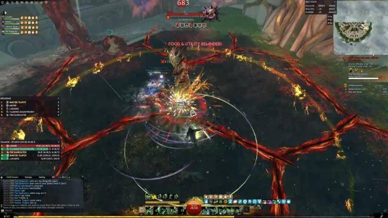
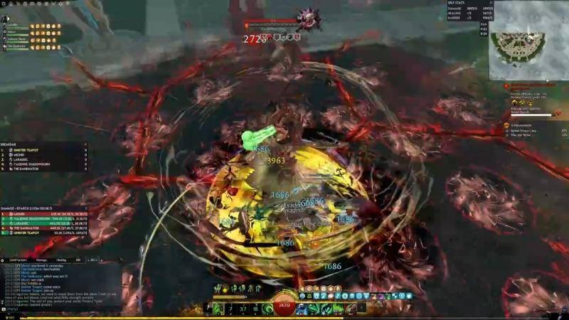
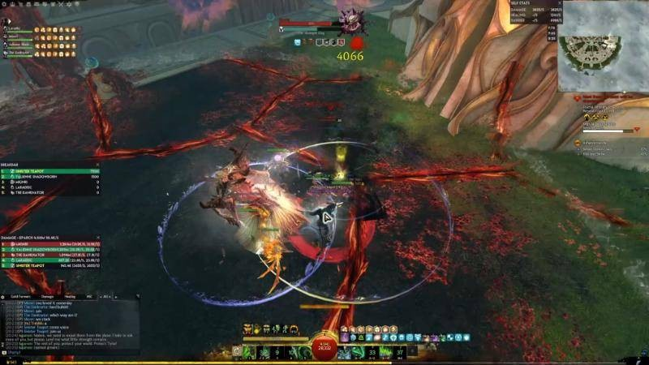
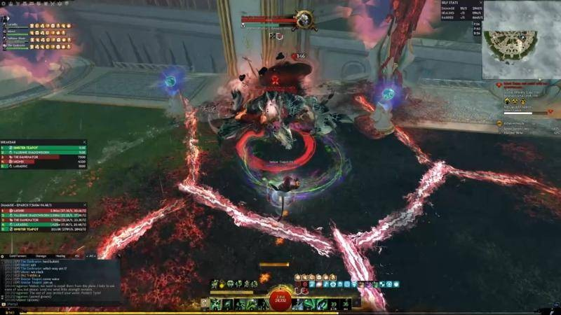

Die Breakbar entfernt sie nicht mehr – sie verhindert nur, dass Eparch weitere Buffs bekommt und eure Emotionen „aufsaugt“. Alle 6 Angriffsmuster kommt die Bar → sofort mit viel CC brechen.
2
Orbs aufteilen
Eine fremde Farbe hebt andere auf → am besten 1 Spieler = 1 Farbe (z. B. DPS Rot, Heiler Blau) oder feste Reihenfolge, wer welche Welle sammelt.
Fokus-Gruppe tötet den Champion, Stall-Gruppe (1–2 Spieler) hält Avatars of Spite auf. Erreicht ein Avatar Eparch → permanenter Buff.
5
Rift schließen
Nach dem Champion-Kill bleibt einer zum Schließen → Avatare despawnen. Beim letzten Rift saugt Eparch die Avatare stattdessen auf.
6
Vor Eparch: Puzzle & Cerus/Deimos
Puzzle: Avatars of Spite unterbrechen das Reinigen → Stabi oder Stealth für den Reiniger. Cerus & Deimos: der nächste Spieler wird fixiert – Bosse getrennt halten, sonst Buff. Deimos-Öl nicht betreten, Hände wegkiten; Cerus-Schatten töten, Orbs außen ablegen.

③ Fire Shockwave – überspringen

② Emotions-Orbs sammeln④ Rift-Phase

① Breakbar sofort brechen
Details zum Nachschlagen
Gang & Puzzle
Erster Gang: Despair-Globule-AoEs mit Agony und Torment – vorsichtig durch, konstant heilen.
Astral Purifier: Knopf-Puzzle; im CM greifen Avatars of Spite an und explodieren am Spieler → Stabi oder Stealth für den Reiniger, oder Avatare schnell töten.
Sind alle Knoten gereinigt, verschwinden die AoEs im Gang.
Cerus & Deimos
Nächster Spieler wird je Boss fixiert – Bosse auseinanderhalten, sonst Schadensbuff.
Deimos: schwarzes Öl breitet sich aus, wenn man reintritt · Hände unter dem entferntesten Spieler wegkiten · großer Smash mit Knockback ausweichen.
Cerus: Malice-Schatten (Klon eines Spielers) vor Erreichen töten · Cry of Rage ausweichen/blocken · Orbs abseits der Gruppe ablegen.
Eparch
Emotions-Orbs nach einem Angriff

Rift mit Champion Kryptis
Emotionen permanent – Breakbar entfernt sie nicht, verhindert nur weitere Buffs und das „Aufsaugen“ eurer Emotionen.
Breakbar alle 6 Angriffsmuster; dabei permanente Barrier und er frisst alle liegenden Orbs.
Rot (Rage): mehr Schaden, mehr erlittener Schaden · Blau (Despair): weniger Schaden genommen und gemacht · Grün (Envy): Zustandsschaden + Boon-Dauer, bei Eparch Boon-Korruption · Lila (Malice): mehr CC, aber Zustände · Orange (Gluttony): Heilung über Zeit, aber periodischer Schaden.
65 %: 2 Rifts (meist Nord/Süd) mit Champion Kryptis + Avatars of Spite.
35 %: 3 Rifts – gleiche Taktik, ein Rift nach dem anderen.
Fokus-Gruppe (Großteil DPS + CC) räumt einen Rift, Stall-Gruppe (1–2 Spieler) hält am anderen Avatare per CC/Schaden auf.
Nach Champion-Kill Rift schließen. Hardstuck zeigt das Stallen mit Heal Scourge.
Klassen & Rollen
Daten: GW2 Wingman, Challenge Mode, „Balance Patch November 2026“, Stand 21.11.2026 · Eparch: Erfolgsquote 72,1 %, Median-Kill 3:41 min
Am häufigsten gespielt (CM)
Spec
Anteil
Willbender
20,4 %
Troubadour
12,2 %
Amalgam
10,1 %
Scrapper
8,9 %
Mechanist
5,3 %
Chronomancer
4,7 %
Dragonhunter
4,4 %
Reaper
3,8 %
Ritualist
3,5 %
Renegade
3,3 %
Höchster Ø-DPS (CM)
Spec
Ø DPS
Top
Catalyst
25.367
25.372
Holosmith
22.594
25.421
Bladesworn
20.933
28.835
Weaver
20.674
32.614
Scrapper
19.505
36.362
Daredevil
19.245
28.258
Virtuoso
18.830
31.324
Soulbeast
18.823
32.644
Galeshot
18.752
23.640
Dragonhunter
18.590
34.877
Rollen-Empfehlung (abgeleitet aus Beliebtheit + Ø-DPS)
Rolle
Specs
Warum
DPS sicher & beliebt
Mechanist, Ritualist, Soulbeast, Luminary
Am häufigsten in erfolgreichen CM-Logs – bewährt für diese Mechaniken.
Große Spanne zwischen Ø und Top-DPS → als Support und als (Boon-)DPS gespielt.
Heal-Support
Troubadour, Chronomancer
Ø-DPS unter 3,5k → in CM-Logs praktisch nur als Heiler/Support.
Komp-Tipp: Laut Wingman ist Willbender hier mit 20 % am beliebtesten. Wichtig: sehr viel CC für die Breakbars und ein zuverlässiger Stall-Spieler für die Rifts (z. B. Heal Scourge wie im Hardstuck-Video).
Klassentipps – worauf du achten musst
Mechanik-Bezug aus dem Hardstuck-Guide; die Klassenhinweise sind allgemeine Spieltipps. Für die neuesten Elite-Specs (z. B. Troubadour, Ritualist, Paragon, Luminary, Conduit, Evoker, Antiquary, Galeshot, Amalgam) gelten v. a. die Klassen-Grundregeln – prüfe die konkreten Skills im aktuellen Build.
Wächter
Firebrand · Luminary · Willbender · Dragonhunter
Willbender: meistgespielt (20 %) – mobil zwischen den Rifts.
Dragonhunter: zweithöchster Top-Wert, Fallen-CC gegen Avatare.
Stabi für den Reiniger im Puzzle.
Ingenieur
Mechanist · Amalgam · Scrapper · Holosmith
Scrapper: höchster Top-Wert und sehr beliebt.
Sneak Gyro / Stealth-Optionen fürs Puzzle.
Hammer-CC für Eparchs Breakbar.
Mesmer
Virtuoso · Chronomancer · Troubadour · Mirage
Viel Burst-CC – ideal für Breakbar und Avatare.
Veil/Mass Invisibility als Stealth fürs Puzzle.
Troubadour: häufigster Heiler.
Elementarmagier
Tempest · Weaver · Catalyst · Evoker
Weaver hoher Ø-DPS.
Fire Shockwave überspringen – auch mit Channels.
Mit Rot sammeln vorsichtig: mehr erlittener Schaden.
Nekromant
Ritualist · Scourge · Reaper · Harbinger
Heal Scourge ist Hardstucks Stall-Beispiel für Rifts.
Reaper: hoher Ø-DPS.
Fear/Pulls halten Avatars of Spite auf.
Widergänger
Renegade · Vindicator · Herald · Conduit
Renegade solide – Staff 5 für Breakbar.
Jalis-Stabi für Puzzle oder Champion.
Vindicator-Sprung-Dodge über die Shockwave.
Krieger
Berserker · Spellbreaker · Bladesworn · Paragon
Berserker/Bladesworn hoher Ø-DPS.
Hammer/Mace: viel CC für Bar und Stall.
Balanced Stance gegen Spin Pull.
Waldläufer
Soulbeast · Untamed · Galeshot · Druid
Soulbeast: solider Ø-DPS.
Dolyak Stance = Gruppen-Stabi.
Longbow-Knockback zum Stallen der Avatare.
Dieb
Daredevil · Deadeye · Specter · Antiquary
Daredevil: hoher Ø-DPS, viele Dodges.
Shadow Refuge / Blinding Powder als Stealth fürs Puzzle.